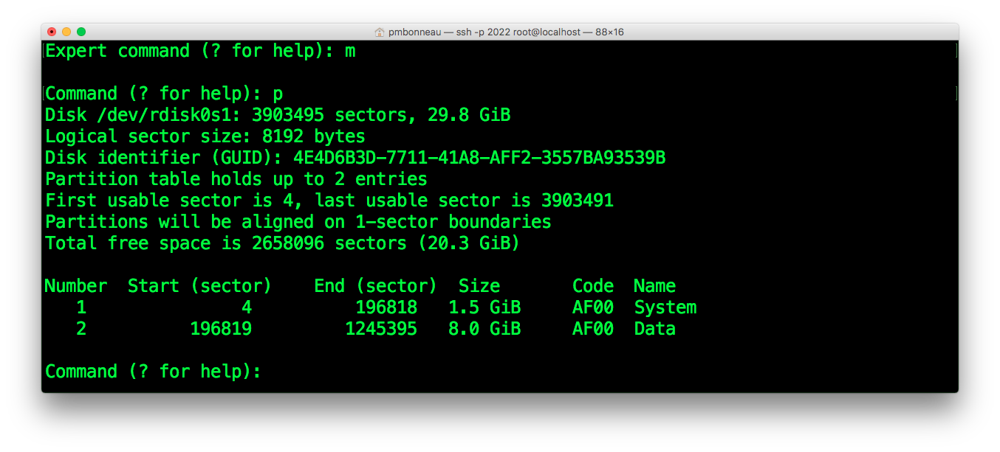

Partition LwVM table
Probably the most bootloop-friendly part of this entire writeup, we are going to play with disk partitions. Most disk partitionning tools warn you to backup your data before proceed. This warning is not there for nothing, there's chance of data loss if something fails. If something goes wrong while playing with partitions on iOS, the device will reboot in recovery mode and you will have to restore. To partition iOS device disk which uses LwVM + GPT, we will use gptfdisk. This tool will allows us to edit the GPT partition table stored on /dev/rdisk0s1, then changes will be written back to the LwVM partition table stored on /dev/rdisk0. This is the LwvM kernel extension which handle LwVM operations. Note that if some invalid changes are made to the GPT, it seems LwVM kernel extension invalidates them and they are not written to disk. This prevents you from doing stupid things, but this is not a 100% reliable protection against bootloops. We first need to edit the GPT for the shrunk main OS data partition. As I understand, hfs_resize changes has been applied to the LwVM partition table but not the delivered GPT. To do this, use gptfdisk command with the disk volume rdisk0s1 which holds the GPT table.
iphone-root#gptfdisk /dev/rdisk0s1
To obtain the current list of partitions :gptfdisk>p
This will print the list including changes that are about to be written to the disk. Note the Logical sector size value (block size) and attribute flags, because we will need those later in this guide in order to properly create new partitions. To get info about the data partition :gptfdisk>i [enter]
2 [enter]
gptfdisk>d [enter]
2 [enter]
gptfdisk>n [enter]
The first sector should be keep as default.[enter]
The last sector is where the partition must ends on the logical disk. We set it as a number of blocks. Each blocks has a size of [block size] value. For the iPhone 4, this value is 8192. Re-calculate the size you set to hfs_resize earlier :1 GB = 1024 * 1024 * 1024 = 1073741824 bytes
8 GB = 8 * 1073741824 = 8589934592
Divide it by [block size] value :
8589934592 / 8192 = 1048576 blocks
Add the default first sector value (this number is the currently allocated number of blocks) : 1048576 + 196819 = 1245395
Give this value to GPTfdisk.
[enter]
Keep the default Hex code.[enter]
Rename the recreated partition to "Data" :gptfdisk>c [enter]
2 [enter]
Data [enter]
gptfdisk>p [enter]
Make sure "Data" partition size corresponds to what you have set to hfs_resize. The original Data partition had some attribute flags set to on. In order to make the recreated partition same as it was and avoid disk issues, we will put these flags to on for it. GPT attributes flags are defined on 64-bit. Each bit correspond to one attribute. To set an attribute, we only have to set its value to one. Take back the attribute flags you noted from original data partition.If they were for example 0003000000000000, you will have to set bit 48 and 49 to on.
63 000000000 00000011 00000000 00000000 00000000 00000000 00000000 00000000
We must now restore back special attributes to this partition :
gptfdisk>x [enter]
a [enter]
2 [enter]
48 [enter]
49 [enter][enter]
 Attribute value should now be same as it was on the original data partition if you set it correctly.
We now have to restore the original data partition GUID :
Attribute value should now be same as it was on the original data partition if you set it correctly.
We now have to restore the original data partition GUID :
gptfdisk>c [enter]
2 [enter]
[GUID] [enter]
gptfdisk>m [enter]
Verify that the data partition as been properly recreated and that is has the right size :gptfdisk>p [enter]
 Now the most dangerous thing of this writeup ever, write partition changes to disk.gptfdisk>w [enter]
y [enter]
iphone-root# sync
iphone-root# sync
iphone-root# sync
Re-launch gptfdisk :
iphone-root#gptfdisk /dev/rdisk0s1
Default partition table can only hold two partitions, we will expand it to allow creating more partitions. Please note that LwVM does not manage more than eight partitions, any additional partitions won't be considered after writing changes.gptfdisk>x [enter]
s [enter]
4 [enter]
- System (Main OS system partition)
- Data (Main OS data partition)
- SystemB (Secondary OS system partition)
- DataB (Secondary OS data partition)
- SystemC (Third OS system partition)
- DataC (Third OS data partition)
- SystemD (Fourth OS system partition)
- DataD (Fourth OS data partition)
gptfdisk>n [enter]
3 [enter]
Calculate the number of sectors you want to allocate to this partition. For example, if you want a 8 GB user data partition for iOS 6.1.3, then do the following maths.
1 GB = 1024 * 1024 * 1024 = 1073741824 bytes
2.4 GB = 2.4 * 1073741824 = 2576980377 bytes
Divide it by [block size] value :
2576980377 / 8192 = 314573 blocks
Add these blocks to the previous partition last sector :
1245396 + 314573 = 1559969
Set the name of the new partition. Important : Do not use "System", "Data" or "Upgrade" on additional partitions name because this can cause some boot or restore process errors and potentially brick the device in worst cases.
gptfdisk>c [enter]
3 [enter][enter]
SystemB [enter]
gptfdisk>n [enter]
4 [enter]
Keep default first sector [enter]Calculate the number of sectors you want to allocate to this partition. For example, if you want a 8 GB user data partition for iOS 6.1.3, then do the following maths.
1 GB = 1024 * 1024 * 1024 = 1073741824 bytes
8 GB = 8 * 1073741824 = 8589934592 bytes
Divide it by [block size] value :
8589934592 / 8192 = 1048576 blocks
Add these blocks to the previous partition last sector :
1559970 + 1048576 = 2608546
2608546 is our current partition last sector. Careful, if this is the last partition you are creating, keep at least 5 unused blocks from the last partition last sector and the end of the disk.
[enter]
Keep current type as Apple HFS/HFS+.[enter]
Keep default Hex code or GUID[enter]
Set the name of the new partition. Again : Do not use "System", "Data" or "Upgrade" on additional partitions name because this can cause some boot or restore process errors and potentially brick the device in worst cases.gptfdisk>c [enter]
4 [enter][enter]
DataB [enter]
gptfdisk>p [enter]
If everything is okay, set the attributes to the secondary data partition.gptfdisk>x [enter]
a [enter]
2 [enter]
48 [enter]
49 [enter][enter]
Repeat steps from point x to y for all additional iOS versions you plan to install. Remember, lwvm won't allow you to have more than eight partitions on your device.
Once everything is done, please do a final check.
gptfdisk>p [enter]
If something is wrong, you can just CTRL+C to cancel and restart from scratch. Otherwise, you are ready to write the changes. Again : The most delicate thing of this writeup.gptfdisk>w [enter]
y [enter]
iphone-root# sync
iphone-root# sync
iphone-root# sync
iphone-root#ls /dev/ | grep rdisk
You should see some disk devices.- /dev/rdisk0 (LwVM device)
- /dev/rdisk0s1 (LwVM provided GPT)
- /dev/rdisk0s1sX (GPT partitions, where X can be from 1 to 7)
iphone-root# reboot
If device rebooted properly, we are now ready to install an iOS system on the partitions.